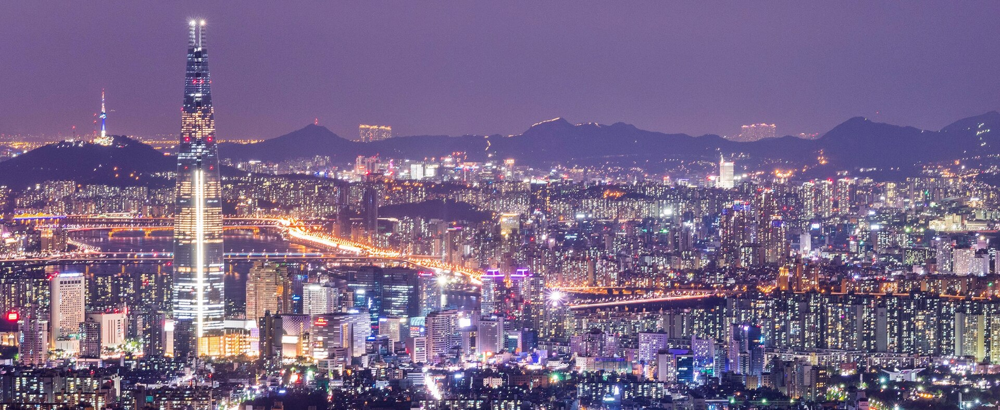
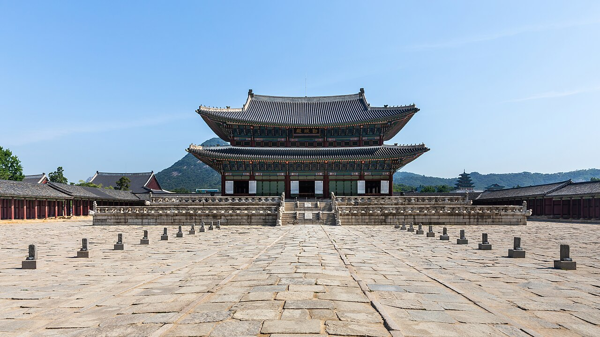
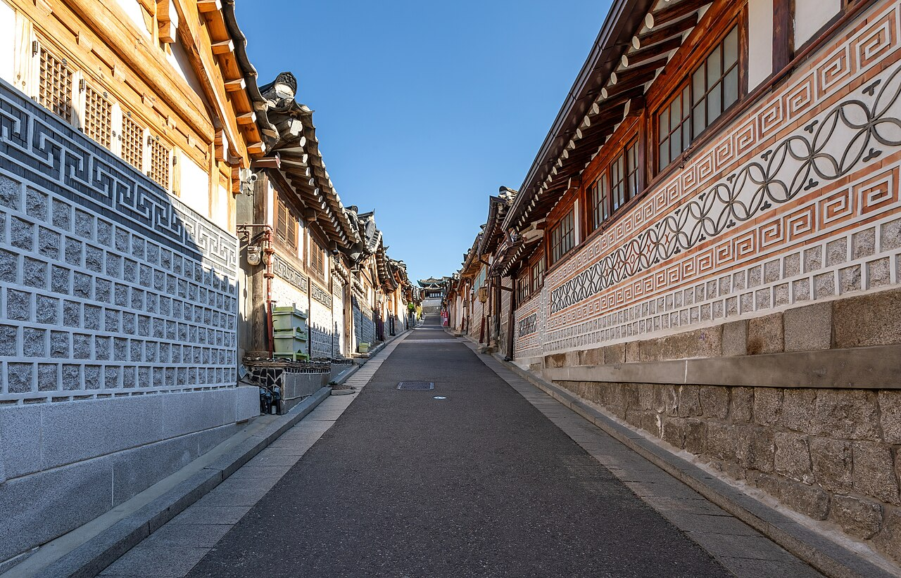
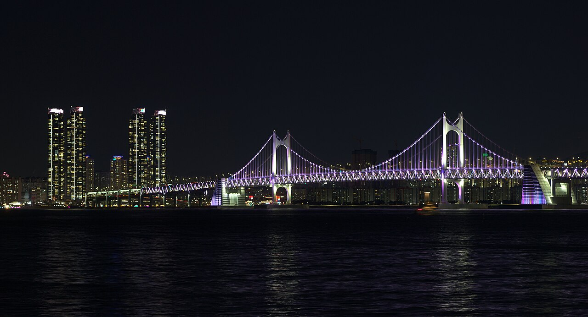
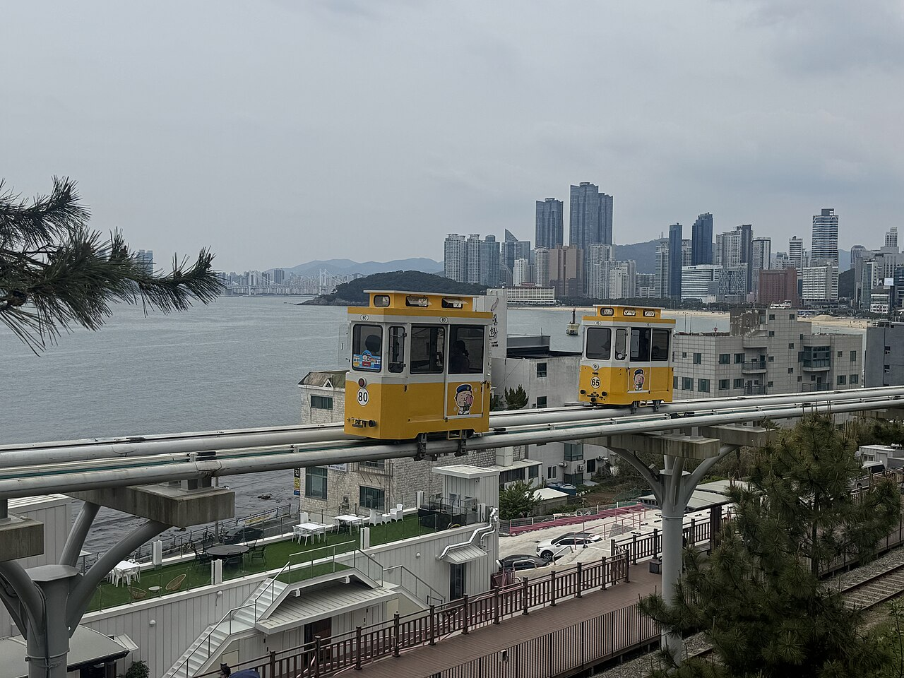
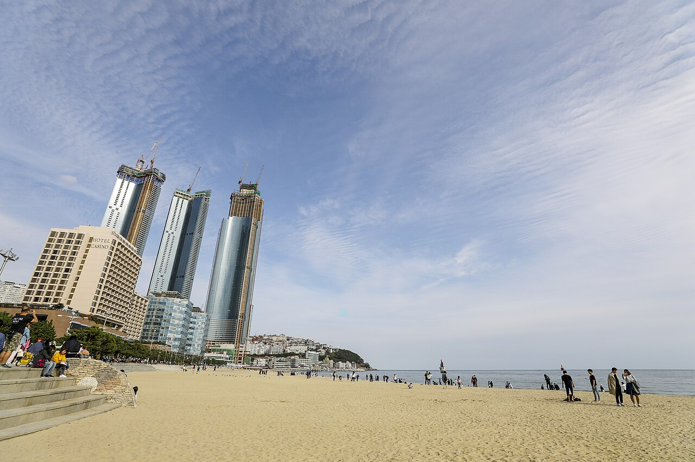

D1 · 抵达
- 下午
- 入住明洞 · 轻量采购
- 晚上
- 明洞夜市 · 早休息

首尔 3 天 + 釜山 2 天 + 返程 · 6 天 5 晚 · 放缓版
仁川进 · 仁川出 · 明洞 3 晚 + 釜山站 2 晚
按天翻页：每天的景点、交通、吃饭、提示都串在一起
行程速览
| 日期 | 上午 | 下午 | 晚上 |
|---|---|---|---|
| D1 抵达 | 12:00 落地仁川 | 入住明洞 · 轻量采购 | 明洞夜市 · 早休息 |
| D2 首尔 | 景福宫 + 换岗仪式 | 北村韩屋村慢逛 | 明洞（梨泰院可选） |
| D3 首尔 | 益善洞 / 南大门市场 | 午休 + 明洞补货 | 打包行李 · 早睡 |
| D4 釜山 | KTX 赴釜山 | 松岛缆车 · 甘川文化村 | 广安里夜景（视体力） |
| D5 釜山 | 海云台沙滩 · 东柏岛 | 15:30 胶囊小火车 → 青沙浦 | 海云台日落 · 烤盲鳗 |
| D6 返程 | KTX 回首尔 · 首尔站机动 | AREX 赴机场 · 14:30 起飞 | — |
Day 1 · 首尔
🏨 住明洞。今天没有任何预约项目，航班晚点也不慌；早点休息，明天是唯一需要赶 10 点仪式的日子。
🗺️ ① 仁川机场 →（AREX 直达 43 分钟）→ ② 首尔站（换 4 号线）→ ③ 明洞（酒店 · 采购 · 夜市）
Day 2 · 首尔


🏨 住明洞。⚠️ 景福宫每周二闭宫（换岗仪式也没有）——如果今天恰逢周二，把本日安排和 D3 上午对调。
🗺️ ① 景福宫 → ② 土俗村参鸡汤 → ③ 北村韩屋村 → ④ 安国站回明洞（全程步行串联；梨泰院彩蛋在 6 号线上，未画出）
Day 3 · 首尔
🏨 住明洞最后一晚。今天的唯一任务：养精神 + 买齐 + 打包。
🗺️ ① 明洞 → ② 益善洞（方案 A，地铁 2 站）；灰点虚线 = 方案 B 南大门市场（步行 15 分钟）
Day 4 · 转场釜山

🏨 住釜山站。今天主线就是「松岛缆车 + 甘川文化村」两件事，广安里纯属加分项；往返全部打车，一次 20–30 分钟车费不贵，别把体力花在地铁换乘上。
🗺️ 主线：① 釜山站 → ② 松岛缆车 → ③ 甘川文化村（全程打车）；灰点虚线 = 晚上二选一：④ 广安里夜景 / ⑤ 南浦洞海鲜（可以看出广安里有多远）
Day 5 · 釜山


🏨 住釜山站。全天只在海云台一个片区活动，步行为主；唯一的硬时间点是 15:30 的胶囊火车。
🗺️ ① 海云台沙滩 → ② 东柏岛 → ③ 海云台市场 → ④ 尾浦站（15:30 胶囊火车）→ ⑤ 青沙浦；灰色虚线 = 沿海边栈道走回尾浦（2.5 公里）
Day 6 · 返程
时间账：07:00 的 KTX → 机场缓冲约 3 小时；就算改坐 08:00 的班次，缓冲仍有 2 小时，不用赶 5 点多的头班车。铁律只有两条：KTX 票提前买好，当天零游玩、零卡点。
🗺️ ① 釜山站 →（KTX 约 2.5 小时）→ ② 首尔站（站内机动）→（AREX 直达 43 分钟）→ ③ 仁川机场
通用